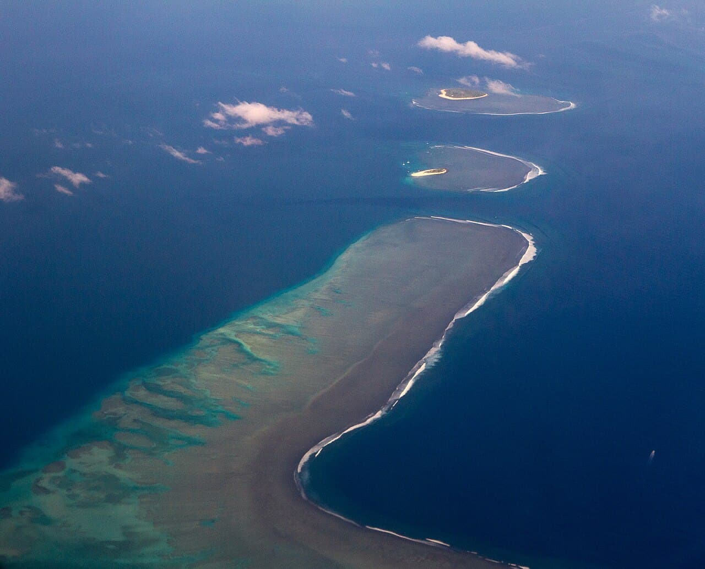

Cloudbreak — Tavarua
Fidji · surf

Gauche de récif au large de l’île de Tavarua, qui accueille une étape du circuit mondial de la World Surf League : la finale 2026 s’y est disputée début septembre.
- Lieu
- Fidji
- Niveau
- Expert
- Activités
- surf
- Type d'eau
- Mer / océan
- Coordonnées
- -17.85, 177.19 (position approximative du secteur)
Dangers à connaître
- Récif au large.
- Accès en bateau.
- Courants dangereux le long des récifs aux Fidji, d’après le FCDO : vérifie le batelier et l’équipement de sécurité du bateau avant d’embarquer.
- Saison des cyclones normalement de novembre à avril, mais des cyclones surviennent toute l’année.
Le conseil d'Ocean Buddy
Spot de récif au large : accès en bateau et niveau expert indispensables.
Ouvrir dans Ocean Buddy Télécharger sur l'App Store
Source : Description historique Ocean Buddy · vérification externe en attente.